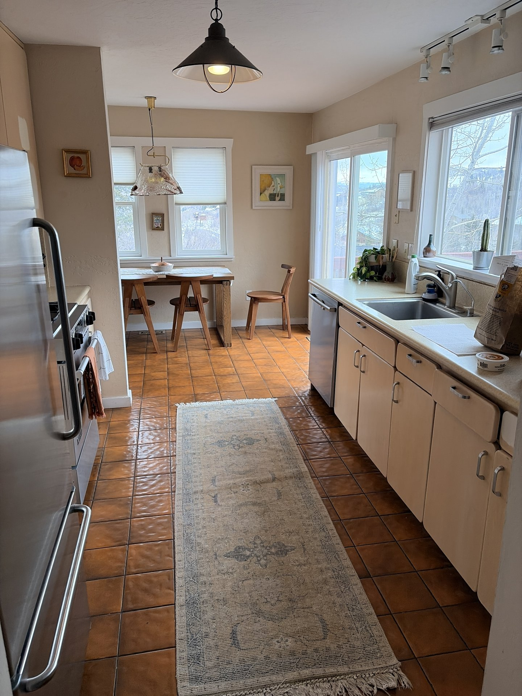

First-time cleaning special
A good fit for new customers booking a residential clean, deep clean or reset before guests arrive.
Cleaning specials
Sun Ray Cleaning keeps specials practical: quote-based offers for first-time cleans, recurring home care, seasonal resets, move cleaning and vacation rental turnover support across Park City, Heber City and Midway.

Available by quote
Home size, condition, timing and frequency affect every cleaning quote, so Sun Ray confirms the best available offer after reviewing the details.
A good fit for new customers booking a residential clean, deep clean or reset before guests arrive.

Weekly and biweekly homes may qualify for better route-based pricing once the first clean and checklist are set.

Helpful after ski season, before summer guests, before holiday hosting or when a second home needs a full reset.

For move-in, move-out, sale prep and rental-ready cleanings where timing and scope are clear upfront.
Host and partner specials
Property managers, Airbnb hosts and second-home owners often need reliable repeat cleanings instead of one-off coupons. Sun Ray can quote priority scheduling, repeat turnover support and multi-property cleaning plans based on your calendar.

How to claim an offer
Text or submit your city, service type, bedrooms, bathrooms, square footage, timing, pets and priorities.
Say you are asking about current specials so Sun Ray can review the best available offer for your clean.
Sun Ray confirms the checklist, date, access details and final quote before anything is booked.
Specials FAQs
Current offers
Send the location, home size, service type and timing. Sun Ray will confirm the best available quote-based offer.